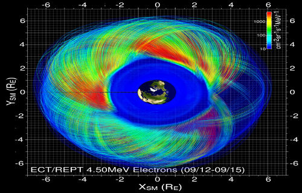
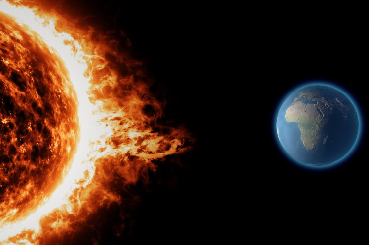
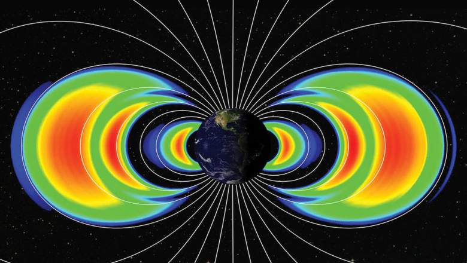

I am leading a team that is pioneering the use of Machine Learning in Space Physics on several fronts. In our team, we exploit a unique combination of expertise in Space Physics, Computational Physics, Machine Learning and Data Analysis.
All our codes and data are publicly available on the team website here.
Forecast of ground magnetic perturbations (dB/dt)
Combination of Machine Learning and physics-based simulation to forecast the perturbation of the magnetic field on the ground, that is responsible for geomagnetic induced current (GIC). GIC can damage electrical power systems and transformers and lead to regional black-outs.
The project uses historical ground-based magnetometer data and the output of the Geospace model that is operational at NOAA/SWPC.
Real-time forecasting of killer electrons on satellite orbits

5-years project funded as a personal fellowship through a NWO-VIDI grant.
In this project we will use Bayesian parameter estimation to enhance physics-based simulations of high-energy electron flux in the radiation belt.
The goal is to be able to predict the fluxes of killer electron along a given satellite orbit.
Artificial Intelligence Data Analysis (AIDA)
AIDA (Artificial Intelligence Data Analysis) is a scientific project coordinated by Prof. Giovanni Lapenta at KU Leuven and funded by the European Community, as part of the Horizon 2020 program (COMPET-4). AIDA has a total cost of 1.5 million euro and involves researchers from universities and companies in 6 countries: Belgium, Netherlands, France, Italy, Greece and the USA. This interdisciplinary collaboration will be devoted to artificial intelligence, applied to the analysis of space data.
Solar Wind Classification
 Classifying the solar wind in different 'types' is important to improve our statistical studies of solar wind properties. We are studying the classification of solar wind types with respect to their solar origin, by using Gaussian Processes. We have classsified about 300,000 hours of solar wind data taken form the OMNI2 database.
The data and software is freely available here.
Classifying the solar wind in different 'types' is important to improve our statistical studies of solar wind properties. We are studying the classification of solar wind types with respect to their solar origin, by using Gaussian Processes. We have classsified about 300,000 hours of solar wind data taken form the OMNI2 database.
The data and software is freely available here.
Forecast of geomagnetic indexes

We are working on forecast algorithms to predict the Dst geomagnetic index, based on solar wind velocity and magnetic field measured at the L1 point. THe latest method employs a combination of Gaussian Processes and Long Short-Term Memory Neural Network. It outputs a distribution probability of future Dst values, up to 6 hours ahead.
CWI-INRIA project 'Data-enhanced simulations for Space Weather predictions'

A project jointly funded by CWI and INRIA, through an international associate team. We propose an innovative approach to Space Weather modeling: the synergetic use of state-of-the-art simulations with Machine Learning and Data Assimilation techniques, in order to adjust for errors due to non-modeled physical processes, and parameter uncertainties.
Back to the top